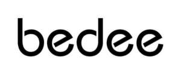

Trade Mark Journal No.2025/025 20 June 2025
UK00004212957 3 June 2025 (6,7,8,9,11,15,16,18,21,22,27,28)

- Class 6
- Steel pipes; nozzles of metal; jets of metal; anti-friction metal; washers of metal; cattle chains; common metals, unwrought or semi-wrought; hardware of metal, small; ironmongery; bells for animals; bells; runners of metal for sliding doors; hooks of metal for clothes rails; towel dispensers of metal; water-pipe valves of metal; fittings of metal for furniture; figurines of common metal; boxes of metal for dispensing paper towels.
- Class 7
- Aerating pumps for aquaria; mixing machines; scissors, electric; cutting machines; knives for mowing machines; meat choppers, electric; washing machines [laundry]; ironing machines; welding machines, electric; suction cups for milking machines; hair clipping machines for animals; blenders, electric, for household purposes; fruit presses, electric, for household purposes; blowing machines; juice extractors, electric; screwdrivers, electric; 3D printing pens; vegetable peelers, electric; vegetable slicers, electric; vegetable shredders, electric.
- Class 8
- Abrading instruments [hand instruments]; sharpening stones; bits [parts of hand tools]; beard clippers; mortise chisels; saws [hand tools]; spanners [hand tools]; ratchets [hand tools]; borers; hand tools, hand-operated; vegetable shredders, hand-operated; stamping-out tools [hand tools]; stropping instruments; pruning scissors; hollowing bits [parts of hand tools]; spades [hand tools]; polishing irons [glazing tools]; garden tools, hand-operated; pruning knives; blades [hand tools]; fingernail polishers, electric or non-electric; nail clippers, electric or non-electric; hair clippers for animals [hand instruments]; shearers [hand instruments]; clothes irons; punches [hand tools]; cutting tools [hand tools]; hand pumps; eyelash curlers; vegetable peelers, hand-operated; kitchen mandolines; hand-operated corn cob strippers; hand-operated fruit slicers; hair straightening irons.
- Class 9
- Cameras [photography]; microscopes; range finders; egg-candlers; gauges; microphones; stands for photographic apparatus; binoculars; video recorders; camcorders; compact disc players; pocket calculators; headphones; DVD players; baby monitors; video baby monitors; smartwatches; video projectors; smart speakers; mobile phone chargers; mobile phone ring stands; breathalyzers; gimbals for digital cameras; gimbals for smartphones.
- Class 11
- Toilet bowls; ice-cream making machines; lanterns for lighting; lighting apparatus and installations; heaters for heating irons; lights for vehicles; ozonizers for sanitizing purposes; light projectors; hair driers; head torches; solar thermal collectors [heating]; aquarium heaters; aquarium filtration apparatus; electric flashlights; cooking stoves; autoclaves, electric, for cooking; footwarmers, electric or non-electric; feeding apparatus for heating boilers; bed warmers; nail lamps; toilet seats; standard lamps; stoves [heating apparatus]; faucets; showers; heating and cooling apparatus for dispensing hot and cold beverages; air fryers; toilets, portable; coffee roasters; pounded rice cake making machines, electric, for household purposes; humidifiers; heating cushions, electric, not for medical purposes; deodorizing apparatus, not for personal use; multicookers; kettles, electric; electrically heated carpets; footmuffs, electrically heated; coffee machines, electric; coffeepots, electric; hot pots, electric; laundry driers, electric; soya milk making machines, electric; dehumidifiers; portable headlamps; fireplaces, domestic.
- Class 15
- Accordions; conductors' batons; drumsticks; bandonions; barrel organs; basses [musical instruments]; harmonicas; keyboards for musical instruments; musical instruments; flutes; electronic musical instruments; picks for stringed instruments; musical boxes; triangles [musical instruments]; pedals for musical instruments; drums [musical instruments]; trumpets; violins; musical instruments for children.
- Class 16
- Staples for offices; stapling presses [office requisites]; aquarelles; biological samples for use in microscopy [teaching materials]; drawing pins; painters' brushes; sealing machines for offices; note books; pencil holders; pencil lead holders; drawing boards; punches [office requisites]; printing sets, portable [office requisites]; drawing pens; paint boxes for use in schools; pens [office requisites]; school supplies [stationery]; paintbrushes; passport holders; writing instruments.
- Class 18
- Mountaineering sticks; leather leads; leather leashes; canes; school bags; collars for animals; leather, unworked or semi-worked; leather trimmings for furniture; umbrellas; backpacks; handbags; travelling bags; cases of leather or leatherboard; vanity cases, not fitted; key cases; bags for sports; slings for carrying infants; pouch baby carriers; bags; clothing for pets; reins for guiding children; hiking sticks; toilet bags, not fitted; luggage organizers.
- Class 21
- Brushes; watering cans; brooms; carpet sweepers; beer mugs; drinking vessels; bottles; vacuum bottles; toilet brushes; combs; glasses [receptacles]; cosmetic utensils; ice cube molds; cleaning instruments, hand-operated; cutting boards for the kitchen; drying racks for laundry; holders for flowers and plants [flower arranging]; scrubbing brushes; fruit presses, non-electric, for household purposes; smoke absorbers for household purposes; mess-tins; gridiron supports; insect traps; pots; kitchen grinders, non-electric; utensils for household purposes; mills for household purposes, hand-operated; nozzles for watering cans; dustbins for household purposes; rat traps; containers for household or kitchen use; sprinklers for watering flowers and plants; syringes for watering flowers and plants; table napkin holders; mouse traps; clothing stretchers; coffee grinders, hand-operated; portable cool boxes, non-electric; water apparatus for cleaning teeth and gums; kitchen utensils; toothbrushes, electric; lunch boxes; spatulas for kitchen use; garlic presses [kitchen utensils]; rails and rings for towels; car washing mitts; make-up brushes; eyelash brushes; egg separators, non-electric, for household purposes; pet feeding bowls, automatic; ultrasonic pest repellers.
- Class 22
- Brattice cloth; ropes, not of metal; ropes; hammocks; snares [nets]; awnings of textile; sails; tents; vehicle covers, not fitted; nets; mesh bags for washing laundry; purse seines; net pens for fish farming; animal feeding nets; dust sheets; bivouac sacks being shelters; netting for protection against birds and insects; camping swags.
- Class 27
- Bath mats; artificial turf; gymnasium mats; gymnastic mats; wallpaper; automobile carpets; carpets; non-slip mats; floor mats, fire-resistant, for fireplaces and barbecues; yoga mats; textile wallcoverings.
- Class 28
- Toys for pets; toys; boxing gloves; golf clubs; rods for fishing; kites; targets; machines for physical exercises; Body training apparatus [exercise]; novelty toys for parties; checkers [games]; chess games; toy pistols; fish hooks; games; bats for games; rackets; fishing tackle; dolls; carnival masks; swimming pools [play articles]; spinning tops [toys]; scooters [toys]; ornaments for Christmas trees, except lights, candles and confectionery; apparatus for games; climbers' harness; elbow guards [sports articles]; knee guards [sports articles]; toy mobiles; skateboards; jigsaw puzzles; hunting game calls; punching bags; remote-controlled toy vehicles; kaleidoscopes; electronic targets; trampolines; toy models; masks [playthings]; drones [toys]; toy robots; ski sticks; play tents; video game consoles; fidget toys; toy musical instruments; gaming keyboards; gaming mice; educational games.
Shenzhen globalbuy Supply Chain Management Co., Ltd
Representative: Yayip.com